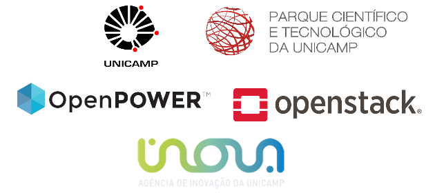

The Minicloud is hosted by the University of Campinas - Unicamp, which is an academic member of the OpenPower Foundation. It provides free access to Power® virtual machines that can be used fordevelopment, testing or migrationof applications to Power®. The virtual machines of Minicloud run on OpenStack®, which supports running a large number of virtual machines on a single scale-out Linux server.

For more information send an email to openpower@ic.unicamp.br